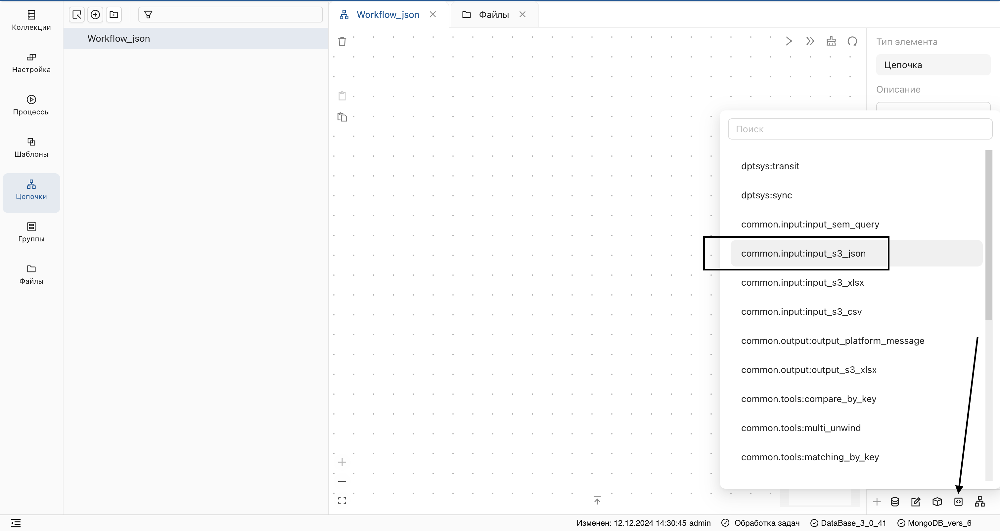
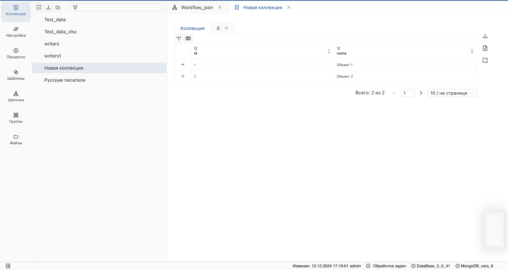
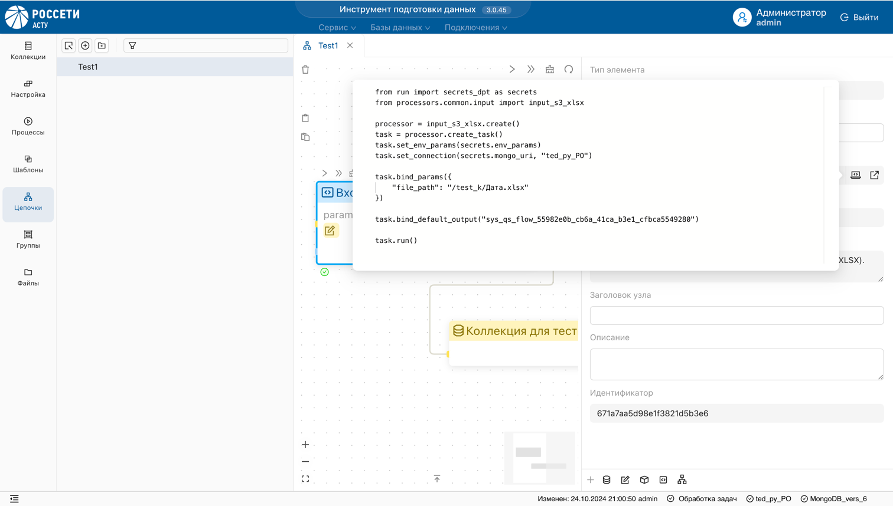
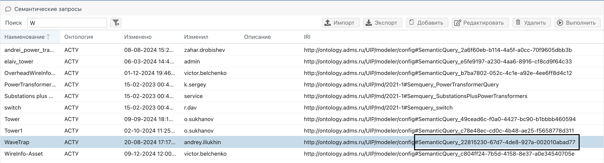
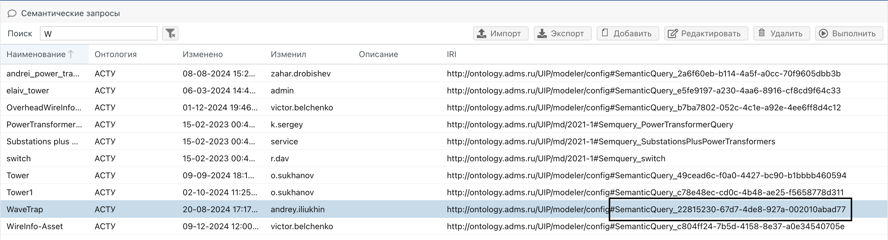
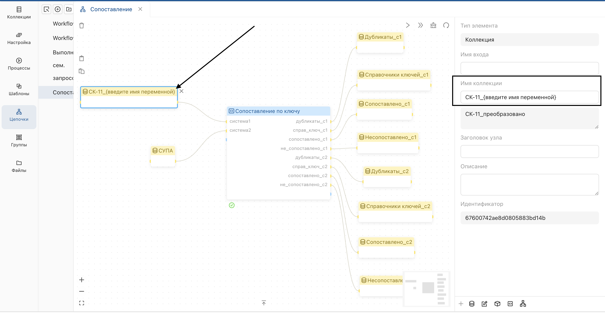
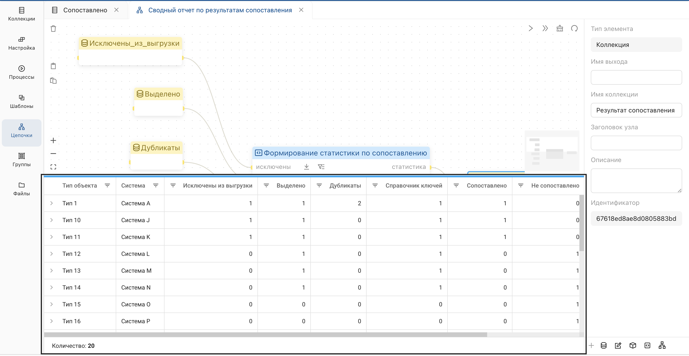

Программные обработчики
Программные обработчики реализуются на языке Python по определённым правилам, и объединяются в логические модули и проекты для включения в состав конфигурации системы. Создание программных обработчиков может быть выполнено с использованием любой IDE или редактора, который поддерживает программирование на Python. Для описания программных обработчиков, модулей и проектов используются следующие классы.
Processor – обработчик.
Поля:
- name: str – имя процессора уникальное в пределах модуля
- title: str – заголовок
- description: str – описание
- inputs: dict[str, Port] – входы обработчика, каждый описывается объектом типа Port
- outputs: dict[str, Port] – выходы обработчика каждый, описывается объектом типа Port
- action: Callable[[Task], None] – функция реализующая алгоритм обработки с параметром типа Task, который обеспечивает доступ к входным данным по имени входа и запись выходных данных в заданный выход.
Port – вход или выход обработчика
Поля:
- name: str – имя процессора уникальное в пределах модуля
- title: str – заголовок
- description: str – описание.
Module - Модуль. Содержит набор программных обработчиков, каждый обработчик включен в один конкретный модуль.
Поля:
- name: str – уникальное имя модуля
- title: str – заголовок
- description: str – описание
- processors: dict[str, Processor] – набор обработчиков в модуле.
Project – Проект. Содержит набор модулей, один модуль может входить в разные проекты.
Поля:
- name: str – уникальное имя модуля
- modules: dict[str, Module] – набор обработчиков в модуле
Описанный с помощью перечисленных выше классов проект содержащий программные обработчики публикуется в определенную пользовательскую базу данных. После этого, программные обработчики проекта доступны для выбора в качестве звена цепочки преобразований.
Пример
Создание обработчиков.
Приведен пример создания 2-х обработчиков,- модуля и проекта.
В данном примере все компоненты описаны в одном файле. При реальной (особенно совместной) разработке важно уделить внимание декомпозиции. Декларация обработчиков модулей и проектов может быть разнесена по отдельным функциям, файлам и папкам, оптимальная структура кода будет зависеть от особенностей проекта.
Рекомендуется хранение исходного кода обработчиков в GIT.
example_project.py
from datetime import datetime
from dpt import Module, Project, Task, Processor
# Создание обработчика simple
def create_simple_processor():
processor = Processor(
name="simple",
title="Простой пример",
description="Добавляет колонку с текущей датой и сообщением",
)
# Добавление входа и выхода
processor.add_input()
processor.add_output()
# Объявление функции с алгоритмом обработки
def action(task: Task):
# Чтение входящего набора данных
data = task.get_reader().read_all()
# Обработка данных
for item in data:
item["info"] = "Обработано питоном " + str(datetime.now())
# Запись исходящего набора данных
writer = task.get_writer()
writer.clear()
writer.write_many(data)
writer.close()
# Назначение функции action в качестве действия для процессора
processor.set_action(action)
return processor
# Создание обработчика multiport
def create_multiport_processor():
processor = Processor(
name="multiport",
title="Пример с несколькими портами",
description="Объединяет данные из двух наборов данных в один. Дополнительно выдает набор данных со статистикой",
)
# Добавление именованных входов и выходов
processor.add_named_input("data_set1")
processor.add_named_input("data_set2")
processor.add_named_output("all_data")
processor.add_named_output("stat")
# Объявление функции с алгоритмом обработки
def action(task: Task):
# Получение входящих наборов данных по имени порта
reader1 = task.get_named_reader("data_set1")
reader2 = task.get_named_reader("data_set2")
# Запись данных в выход all_data
all_data_writer = task.get_named_writer("all_data")
all_data_writer.clear()
all_data_writer.write_many(list(reader1.read_all()))
all_data_writer.write_many(list(reader2.read_all()))
all_data_writer.close()
# Запись данных в выход stat
stat_writer = task.get_named_writer("stat")
stat_writer.clear()
stat_writer.write_many(
[
{"name": "data_set1", "count": reader1.get_count()},
{"name": "data_set2", "count": reader2.get_count()},
]
)
stat_writer.close()
# Назначение функции action в качестве действия для процессора
processor.set_action(action)
return processor
def main():
# Создание модуля и добавление в него 2-х обработчиков
module = Module("examples")
module.add_processors([create_simple_processor(), create_multiport_processor()])
# Создание проекта и добавление в него модуля
project = Project("example")
project.add_module(module)
return project
Публикация
Публикация проекта с программными обработчиками в заданный экземпляр и базу данных препаратора с помощью скрипта.
from dpt import management
# Строка соединения с Mongo DB (из подключения в препараторе)
management.set_connection("mongodb://...")
# База данных
management.set_workspace("demo")
management.deploy_project(
# Корневая папка в которой находятся Python файлы с определением обработчиков
root_path=r"C:\Repos\datafabric\dpt-python-config\configuration",
# Папки и файлы которые нужно включить в сборку (по умолчанию входит все содержимое корневой папки)
include=["processors/example_project.py"],
# Файл в котором находится функция создающая и возвращающая проект
main_file_path=r"processors/example_project.py",
# Имя функции которая создает и возвращает проект
main_func_name="main",
)
В результате публикации обработчики становятся доступны для выбора в разделе «Цепочки».
Ниже приведено описание следующих программных обработчиков:
- Импорт JSON.
- Импорт Excel.
- Семантический запрос.
- Сопоставление.
- Отправка сообщений в платформу.
Дополнительно, доступна следующая функциональность:
- Набор коллекций по маске.
- Сводный отчет по результатам сопоставления.
Импорт JSON
Программный обработчик предназначенный для импорта данных из JSON файла, размещенного в файловом хранилище.
Загрузка файла в файловое хранилище
Перейдите в раздел Файлы и загрузите файл формата JSON с данными.

Пример файла:
{
"data": [
{
"id": 1,
"name": "Объект 1"
},
{
"id": 2,
"name": "Объект 2"
}
]
}
Корневой объект должен содержать одно поле с массивом объектов (в данном примере — поле data).
Убедитесь, что файл успешно добавлен в файловое хранилище.

Настройка параметров обработчика
В разделе Цепочки настройте программный обработчик:
-
Выберите программный обработчик из списка. 
Результат:
В рабочей области появится объект обработчика в виде блока с синим заголовком. 2. В разделе Цепочки настройте параметры обработчика:
2. В разделе Цепочки настройте параметры обработчика:- Нажмите params на блоке, в результате чего отобразится панель для настройки параметров.

- В форме "Данные" пропишите параметры процессора в формате Json:
- Нажмите params на блоке, в результате чего отобразится панель для настройки параметров.


{
"file_path": "путь_к_JSON_файлу.json",
"array_field": "data"
}
Сохраните импортированные данные в коллекцию:
- Выберите коллекцию из списка на нижней панели.

Результат:
В рабочей области появится объект обработчика в виде блока с желтым заголовком.
- Подключите выходную коллекцию к обработчику.

Запуск обработчика
Нажмите кнопку запуска на блоке обработчика.

Результат:
В рабочей области отобразится статус успешного выполнения.

Проверка результата
В разделе "Коллекции" убедитесь, что данные из JSON-файла корректно добавлены в выбранную коллекцию. 
Отладка скрипта
Если обработчик возвращает ошибку:

 Нажмите на заголовок блока, чтобы открыть панель настройки обработчика.
Нажмите на заголовок блока, чтобы открыть панель настройки обработчика.
 В панели настройки вызовите функцию скрипта для отладки.
В панели настройки вызовите функцию скрипта для отладки.
 Скопируйте текст скрипта в среду разработки и выполните отладку.
Скопируйте текст скрипта в среду разработки и выполните отладку.
Импорт Excel
Программный обработчик предназначенный для импорта данных из Excel файла, размещенного в файловом хранилище.
В разделе Файлы загрузите файл формата Excel.

Инициализация обработчика
В разделе Цепочки настройте обработчик.
 Выберите обработчик из списка.
Выберите обработчик из списка.
Результат: Выбранный объект отобразится в рабочей области в виде блока с синим заголовком.
Скопируйте путь к файлу в разделе Файлы.
 Задайте параметры в поле params:
Задайте параметры в поле params:
{
"file_path": "путь_к_тестовому_файлу.xlsx"
}
Подключите выходную коллекцию к обработчику.
 Запустите обработчик.
Запустите обработчик.

Результат:
В рабочей области должен отобразиться статус успешного запуска процесса, а в списке коллекций объект с данными из хранилища.
 Проверьте, что данные из
Проверьте, что данные из XLSX файла корректно добавлены в раздел Коллекции.
Отладка скрипта
В случае, если запуск обработчика возвращает ошибку, отладьте скрипт вручную:
- Нажмите на заголовок блока.

Результат:
Слева отобразится панель настройки обработчика. - Вызовите функцию скрипта для отладки.

- Скопируйте текст и отладьте его в среде разработки. 
Семантический запрос
Ниже описан пример настройки цепочки преобразований с использованием объекта Программный обработчик, выполняющего семантический запрос.
Загрузка данных и подготовка
Перейдите в программное приложение Редактор модели и, в списке "Онтологии", выберите "Семантические запросы".
 Скопируйте идентификатор запроса без префикса.

Скопируйте идентификатор запроса без префикса.

Инициализация обработчика
В разделе "Цепочки" настройте программный обработчик:
- Выберите обработчик для семантического запроса из списка.
- Обработчик отобразится в рабочей области в виде блока с синим заголовком.

Настройка параметров обработчика
В блоке обработчика нажмите params, чтобы открыть панель настройки параметров.
 Задайте параметры обработчика в формате JSON:
Задайте параметры обработчика в формате JSON:
- format: укажите формат данных на выходе (csv для плоского формата или json для иерархического).
- sem_query_id: задайте идентификатор семантического запроса без префиксаа.
- root_entity_ids: перечислите идентификаторы объектов без префиксов (необязательный параметр). Если он отсутствует, запрос применяется ко всем объектам нужного типа.
Пример параметров для csv-формата:
{
"format": "csv",
"sem_query_id": "SemanticQuery_22815230-67d7-4de8-927a-002010abad77"
}
Пример параметров для json-формата:
{
"format": "json",
"sem_query_id": "SemanticQuery_c061e503-c81c-4c64-9ad9-7047cb2e9ed6",
"root_entity_ids": [
"e6e30190-624c-4664-b649-47f833d2a869",
"556bcf33-0d51-4303-b193-62a6ad389318"
]
}
Подключите выходную коллекцию:
- Выберите коллекцию из списка в нижней панели.
- Соедините блок обработчика с выходной коллекцией.

В результате запуска обработчика может возникнуть ошибка, связанная с некорректным форматированием входного CSV-файла.
- Добавьте еще одну коллекцию на вход для записи расхождения в данных.

Коллекция должна быть добавлена в тот же порт.
Запуск обработчика
Нажмите на элемент запуска блока обработчика.

Результат:
В рабочей области отобразится статус успешного выполнения. Данные будут сохранены в формате JSON или CSV в зависимости от указанных параметров.
Проверка результата
В разделе "Коллекции" убедитесь, что данные корректно добавлены в выбранную коллекцию.

Сопоставление
Программный обработчик "Сопоставление" выполняет следующие задачи:
- Сопоставление объектов из различных систем по выделенному ключу.
- Формирование выходных данных в соответствии с алгоритмом:
- Дубликаты объектов.
- Справочники ключей без дубликатов.
- Сопоставленные объекты с указанием идентификаторов систем.
- Несопоставленные объекты для каждой системы.
Входные данные
Для корректной работы обработчика необходимо соблюсти имена полей коллекции:
- Система: идентификатор системы (например, "СУПА").
- Тип объекта: тип объектов (например, "подстанции").
- Ключ: уникальный ключ для сопоставления.
- Идентификатор: уникальный идентификатор объекта.
Выходные данные
После выполнения обработчика пользователь получает следующие результаты:
- Дубликаты: список объектов, имеющих повторяющиеся ключи сопоставления. Выводится отдельно для каждой системы.
- Справочники ключей: список входных объектов без дубликатов.
- Сопоставленные объекты: объекты, для которых ключи совпадают, объединяются следующим образом:
- Запись из справочника ключей системы 1 с добавлением идентификатора системы 2.
- Запись из справочника ключей системы 2 с добавлением идентификатора системы 1.
- Несопоставленные объекты: списки объектов, для которых не найдено совпадение по ключу, отдельно для каждой системы.
Порядок работы
-
Добавьте обработчик в рабочую область.

-
Добавьте входные коллекции и подключите их к процессору.

Обработчик поддерживает два способа подключения входных данных:
- Явное подключение: пользователь вручную задаёт коллекции для системы 1 и системы 2.
- Подключение по маске: использованием маски можно подключить сразу несколько коллекций, соответствующих указанным условиям (например, все типы оборудования из определённой системы).
- Добавьте выходные данные и задайте им имена.
- Запустите обработчик.

Результат:
Выходные данные будут добавлены в раздел коллекции.

Набор коллекций по маске
Данная функция предназначена для подключения набора коллекций в обработчике с использованием маски. Это позволяет:
- Обрабатывать данные сразу из нескольких коллекций.
- Разделять данные из одной коллекции (выход обработчика) на несколько коллекций.
Входные данные
Порядок работы:
Откройте исходную цепочку преобразований.

Обратите внимание, что в источнике параметры не заполнены.
Задайте маску в параметрах цепочки преобразований:
- Нажмите на объект, по которому хотите задать маску.
- В отобразившемся окне, введите параметры маски через нижнее подчеркивание:
- Укажите постоянную часть маски для общей части наименования коллекции.
- Укажите переменную часть маски в фигурных скобках.

Результат:
Обработчик автоматически найдет все коллекции, содержащие постоянную часть маски

Пример 1:
- Введите маску "СК-11_{x}", где "СК-11" является постоянной частью, а "{x}" - переменной.
- Введите маску "СУПА_{y}", где "СУПА" является постоянной частью, а "{y}" - переменной.
Результат:
В окно с параметрами подтянутся все коллекции из текущей БД:
- В имени которых будет присутствовать постоянная часть маски "СК-11" и "СУПА".
-
Структура маски будет соответствовать - "[постоянная часть]_{переменная часть}".
 Пример 2:
Пример 2: -
Задайте маску "{x}_{y}_unmatched", где "x" и "у" - переменные, а "unmatched" - постоянная часть.
Результат:
В окно с параметрами подтянутся все коллекции из текущей БД:
- В имени которых будет присутствовать постоянная часть маски "unmatched".
- Структура маски будет соответствовать - "{переменная часть}_{переменная часть}_[постоянная часть]".
 После настройки маски запустите обработчик. Для проверки результата, нажмите на необходимый блок и отобразите данные.
После настройки маски запустите обработчик. Для проверки результата, нажмите на необходимый блок и отобразите данные.

Результат:
Производные данные содержат поля с наименованием переменной части коллекции, а также поле, с результатом сопоставления по условию.

Выходные данные
Для распределения выходных данных задайте маску по аналогии. Например:
{type}_{system}_processed
Результат:
Обработчик создаст отдельные коллекции для каждого типа объекта и системы:
- transformer_SK-11_processed
- circuitbreaker_SPA_processed.
Если маска не совпадает с именами коллекций, данные не будут обработаны. Имена коллекций должны быть стандартизированы и соответствовать заданной структуре.
Сводный отчет по результатам сопоставления
Программный обработчик "Сводный отчет" принимает на вход коллекции, и на выходе формирует таблицу со статистикой. Таблица позволяет анализировать данные, переходить к исходным коллекциям и применять фильтры.
Входные данные
На вход могут подаваться следующие типы коллекций:
- Исключены из выгрузки: коллекции с перечнем объектов, исключенных из сопоставления.
- Выделено: коллекции с перечнем сопоставляемых объектов.
- Дубликаты: коллекции, содержащие список объектов из коллекции «Выделено» с повторяющимся ключом сопоставления.
- Справочник ключей: коллекции с перечнем сопоставляемых объектов без дубликатов.
- Сопоставлено: коллекции с объектами, которые были успешно сопоставлены.
- Не сопоставлено: коллекции с объектами, которые не удалось сопоставить.
 Входные коллекции должны содержать обязательные поля:
Входные коллекции должны содержать обязательные поля:
- Система.
- Тип объекта.
 Несколько коллекций могут быть подключены к одному входу обработчика как:
Несколько коллекций могут быть подключены к одному входу обработчика как:
-
Явно: пользователь вручную выбирает коллекции для входа.
-
По маске: используется набор коллекций, соответствующих определенным условиям (например, все коллекции одного типа).
Запуск обработчика
Запуск обработчика происходит по аналогии с другими обработчиками текущего раздела.
Формирование отчета
На выходе обработчика формируется коллекция со статистикой (таблица).
Колонки таблицы:
- Исключены из выгрузки: количество строк в соответствующих входных коллекциях.
- Выделено: количество строк в коллекциях сопоставляемых объектов.
- Дубликаты: количество строк с повторяющимися ключами.
- Справочник ключей: количество строк сопоставляемых объектов без дубликатов.
- Сопоставлено: количество успешно сопоставленных строк.
- Не сопоставлено: количество не сопоставленных строк.
- % сопост: процент строк в категории «Сопоставлено» относительно «Выделено».

Работа с таблицей
- Переход к исходным коллекциям
При нажатии на ячейку в колонках «Исключены из выгрузки», «Выделено», «Дубликаты», «Справочник ключей», «Сопоставлено» или «Не сопоставлено» осуществляется переход в исходную коллекцию с наложением фильтра по колонкам Система и Тип объекта.
Этот функционал реализован с использованием сохранения значений фильтра таблицы в адресной строке браузера.
Пример использования
*** Входные коллекции:**
- Коллекция «Исключены из выгрузки»: 10 строк.
- Коллекция «Выделено»: 100 строк.
- Коллекция «Дубликаты»: 20 строк.
- Коллекция «Справочник ключей»: 80 строк.
- Коллекция «Сопоставлено»: 70 строк.
- Коллекция «Не сопоставлено»: 30 строк.
| Система | Тип объекта | Исключены из выгрузки | Выделено | Дубликаты | Справочник ключей | Сопоставлено | Не сопоставлено | % сопост |
|---|---|---|---|---|---|---|---|---|
| System A | Object 1 | 5 | 50 | 10 | 40 | 35 | 15 | 70% |
| System B | Object 2 | 5 | 50 | 10 | 40 | 35 | 15 | 70% |